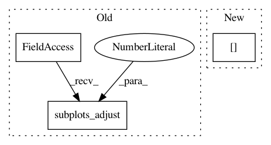

618588dcf98a32cc2c8e3d9e766b416ca8f3c9ac,examples/subplots_axes_and_figures/figure_title.py,,,#,18
Before Change
plt.title("subplot 2")
plt.ylabel("Undamped")
plt.subplots_adjust(left=0.2, wspace=0.8, top=0.8)
plt.show()
After Change
axs[1].plot(t3, np.cos(2*np.pi*t3), "--")
axs[1].set_xlabel("time (s)")
axs[1].set_title("subplot 2")
axs[1].set_ylabel("Undamped")
plt.show()
In pattern: SUPERPATTERN
Frequency: 3
Non-data size: 3
Instances
Project Name: matplotlib/matplotlib
Commit Name: 618588dcf98a32cc2c8e3d9e766b416ca8f3c9ac
Time: 2018-07-06
Author: jklymak@gmail.com
File Name: examples/subplots_axes_and_figures/figure_title.py
Class Name:
Method Name:
Project Name: theislab/scanpy
Commit Name: 9018fd6e5f6e3e0ce07e734cf71ba7abac649997
Time: 2017-02-02
Author: f.alex.wolf@gmx.de
File Name: scanpy/tools/dpt.py
Class Name:
Method Name: plot_groups
Project Name: stared/livelossplot
Commit Name: ae098dc6dbc8abfb8068723e13908424c706eb78
Time: 2018-11-27
Author: katarzyna.m.kanska@gmail.com
File Name: livelossplot/core.py
Class Name:
Method Name: draw_plot